<meta charset="utf-8">
<title>Glance Coach</title>
<link rel="stylesheet" href="https://fonts.googleapis.com/css2?family=Plus+Jakarta+Sans:wght@300;400;600;700&family=DM+Sans:ital,opsz,wght@0,9..40,400;0,9..40,500;0,9..40,600;1,9..40,400&display=swap">
<style>
/* Layout: one reading column (720px) with wide figures breaking out to 1100px; mono ground, one purple accent */
:root{
  --bg:#FAFAFB; --fg:#141418; --mut:#6E6D78; --line:#E4E3EA; --card:#FFFFFF; --acc:#5B33E6; --acc-soft:#F1EDFF;color-scheme:light;
  --display:"Plus Jakarta Sans",system-ui,sans-serif; --body:"DM Sans",system-ui,sans-serif;
}
body{background:var(--bg);color:var(--fg);font:400 18px/1.6 var(--body);padding-inline:20px}
main{max-width:1100px;margin:0 auto;padding-block:56px 96px;display:flex;flex-direction:column;gap:96px}
section{display:flex;flex-direction:column;gap:20px}
.col{width:100%;display:flex;flex-direction:column;gap:16px}
main>section{padding-inline:clamp(8px,4vw,64px)}
main>section.hero{padding-inline:clamp(8px,4vw,64px) 0}
p{max-width:68ch}h2{max-width:22ch}
main .persona{grid-template-columns:360px 1fr}
.eyebrow{font:600 13px var(--body);letter-spacing:.12em;text-transform:uppercase;color:var(--acc)}
h1,h2,h3{font-family:var(--display);text-wrap:balance;letter-spacing:-.02em;margin:0}
h1{font-size:clamp(40px,6vw,68px);line-height:1.04}
h2{font-size:clamp(28px,3.6vw,40px);line-height:1.12}
h3{font-size:20px;line-height:1.3}
p{margin:0;color:var(--mut)}p.lead{font-size:21px;color:var(--fg)}
strong{color:var(--fg);font-weight:600}
.meta{display:grid;grid-template-columns:repeat(2,minmax(0,1fr));gap:24px 32px;padding-top:20px;border-top:1px solid var(--line);font-size:15px}
.meta div{display:flex;flex-direction:column;gap:4px}.meta span{color:var(--mut);font-size:12px;letter-spacing:.1em;text-transform:uppercase}
.frame{width:100%;border-radius:20px;overflow:hidden;border:1px solid var(--line);background:#F1F0F5}
.frame iframe{display:block;width:100%;aspect-ratio:16/10;border:0}.frame.hero iframe{pointer-events:none}
.cap{font-size:14px;color:var(--mut);text-align:center}
.btns{display:flex;gap:12px;flex-wrap:wrap}
.btn{display:inline-flex;align-items:center;gap:8px;padding:12px 20px;border-radius:999px;font:600 15px var(--body);text-decoration:none;border:1px solid var(--line);color:var(--fg);background:var(--card)}
.btn.p{background:var(--acc);color:#fff;border-color:var(--acc)}
.btn:focus-visible{outline:3px solid var(--acc);outline-offset:2px}
.persona{display:grid;grid-template-columns:280px 1fr;gap:32px;align-items:center;background:var(--card);border:1px solid var(--line);border-radius:24px;padding:28px}
.persona img{width:100%;aspect-ratio:4/5;object-fit:cover;border-radius:16px}
.persona ul{margin:8px 0 0;padding-left:20px;display:flex;flex-direction:column;gap:8px;color:var(--mut)}
.persona li b{color:var(--fg);font-weight:600}
figure{margin:0;display:flex;flex-direction:column;gap:12px}
figure img{width:100%;border-radius:18px;border:1px solid var(--line);background:#fff}
.insights{display:grid;grid-template-columns:repeat(3,1fr);gap:28px}
.insights div{display:flex;flex-direction:column;gap:8px;min-width:0}
.insights b{font:700 16px var(--display);color:var(--fg)}
.hmw{background:var(--acc);color:#fff;border-radius:24px;padding:36px}
.hmw p{color:#fff;font:600 clamp(22px,2.6vw,30px)/1.3 var(--display)}
.hmw span{display:block;font:600 13px var(--body);letter-spacing:.12em;text-transform:uppercase;opacity:.75;margin-bottom:10px}
.timing{display:grid;grid-template-columns:repeat(3,1fr);border:1px solid var(--line);border-radius:18px;overflow:hidden;background:var(--card)}
.timing div{padding:20px;display:flex;flex-direction:column;gap:4px;min-width:0}.timing div+div{border-left:1px solid var(--line)}
.timing small{font:600 12px var(--body);letter-spacing:.1em;color:var(--acc);text-transform:uppercase}
.decisions{display:flex;flex-direction:column;border-top:1px solid var(--line)}
.decisions div{display:grid;grid-template-columns:minmax(0,1fr) minmax(0,1.3fr);gap:24px;padding:18px 0;border-bottom:1px solid var(--line)}
.decisions b{font:700 17px/1.35 var(--display)}
.qa{display:grid;grid-template-columns:repeat(2,minmax(0,1fr));gap:16px}
.qa div{background:var(--card);border:1px solid var(--line);border-radius:18px;padding:22px;display:flex;flex-direction:column;gap:8px}
.qa small{font:600 12px var(--body);letter-spacing:.1em;color:var(--mut);text-transform:uppercase}
.qa b{font:700 17px/1.35 var(--display)}
.edges{margin:0;padding-left:20px;color:var(--mut);display:flex;flex-direction:column;gap:8px}
@media (max-width:760px){.persona{grid-template-columns:1fr}.insights,.qa,.timing{grid-template-columns:1fr}.timing div+div{border-left:0;border-top:1px solid var(--line)}.decisions div{grid-template-columns:1fr;gap:4px}.frame iframe{aspect-ratio:9/14}}
.hero{display:grid;grid-template-columns:minmax(0,.8fr) minmax(0,1.3fr);gap:0;padding-inline:clamp(8px,4vw,64px);align-items:center;max-width:1280px;width:100%;margin:0 auto;min-height:100vh;margin-top:-56px}
.hero-text{display:flex;flex-direction:column;gap:20px}
.hero h1{font-size:clamp(34px,3.6vw,48px);max-width:14ch}
.hero-vis{align-self:stretch;margin-right:calc(-1 * clamp(8px,4vw,64px) - 20px)}.hero-vis iframe{display:block;width:100%;height:100%;min-height:100vh;border:0;pointer-events:none;-webkit-mask-image:linear-gradient(90deg,transparent 0,#000 28%);mask-image:linear-gradient(90deg,transparent 0,#000 28%)}
main{max-width:1280px}
@media (max-width:900px){.hero{grid-template-columns:1fr;min-height:0}.hero-vis{align-self:stretch;margin-right:calc(-1 * clamp(8px,4vw,64px) - 20px)}.hero-vis iframe{display:block;width:100%;height:100%;min-height:100vh;border:0;pointer-events:none;-webkit-mask-image:linear-gradient(90deg,transparent 0,#000 28%);mask-image:linear-gradient(90deg,transparent 0,#000 28%)}}
/* remote diagram */
.remote-d{display:grid;grid-template-columns:auto minmax(0,1fr);gap:40px;align-items:center;background:var(--card);border:1px solid var(--line);border-radius:24px;padding:36px}
.rm{position:relative;width:170px;height:400px;border-radius:85px;background:#222128;box-shadow:inset 0 1px 0 #3a3942}
.rm .pad{position:absolute;left:18px;top:28px;width:134px;height:134px;border-radius:50%;background:#33323b}
.rm .ok{position:absolute;left:43px;top:43px;width:48px;height:48px;border-radius:50%;background:var(--acc);color:#fff;display:grid;place-items:center;font:700 14px var(--body)}
.rm .ar{position:absolute;color:#C9B8FF;font:700 20px var(--body)}.rm .ar.off{color:#5c5b66}
.rm .bk{position:absolute;left:24px;top:196px;width:46px;height:46px;border-radius:50%;background:#C9B8FF;color:#222;display:grid;place-items:center;font:700 18px var(--body)}
.rm .dot{position:absolute;top:196px;width:46px;height:46px;border-radius:50%;background:#33323b}
.rlist{display:flex;flex-direction:column;gap:18px}
.rlist div{display:grid;grid-template-columns:72px minmax(0,1fr);gap:16px;align-items:center}
.rlist .k{justify-self:start;padding:6px 12px;border-radius:999px;background:var(--acc-soft);color:var(--acc);font:700 14px var(--body)}
.rlist .k.off{background:#EEEEF2;color:#8E8E99}
.rlist b{font:700 17px var(--display);display:block}.rlist p{font-size:15px}
@media (max-width:760px){.remote-d{grid-template-columns:1fr;justify-items:center}}
.rmimg{width:170px;height:auto;display:block}
@media (max-width:760px){main .persona{grid-template-columns:1fr}}
h1,h2{font-weight:300;color:#8A8996}h1 b,h2 b{font-weight:700;color:var(--fg)}
html,body{overflow-x:hidden}
.decisions div{grid-template-columns:minmax(0,1fr) minmax(0,1.2fr);align-items:start}
.decisions span{display:flex;flex-direction:column;gap:6px}.decisions .n{font:600 12px var(--body);letter-spacing:.1em;color:var(--acc);text-transform:uppercase}
.decisions b{font-weight:500}.decisions em,.qa em{font-style:normal;font-weight:700}
.qa b{font-weight:500}.qa p{font-size:15px}
.edges b{color:var(--fg);font-weight:600}
.kumu{border:1px solid var(--line);border-radius:18px;overflow:hidden;background:#fff}.kumu iframe{display:block;width:100%;height:640px;border:0}
.eyebrow{font:600 17px var(--body)!important;letter-spacing:0!important;text-transform:none!important;color:var(--acc)}
.persona2{display:grid;grid-template-columns:minmax(0,380px) minmax(0,1fr);gap:56px;align-items:center}
.persona2 img{width:100%;aspect-ratio:4/5;object-fit:cover;border-radius:20px}
.pt{display:flex;flex-direction:column;gap:18px}
.tri{display:grid;grid-template-columns:repeat(3,minmax(0,1fr));gap:14px;margin-top:10px}
.tri div{background:var(--card);border:1px solid var(--line);border-radius:16px;padding:18px;display:flex;flex-direction:column;gap:6px}
.tri small{font:600 14px var(--body);color:var(--acc)}.tri b{font:500 17px/1.4 var(--body);color:var(--fg)}
@media (max-width:900px){.persona2,.tri{grid-template-columns:1fr}}
.timing small,.qa small,.decisions .n,.meta span,.hmw span{text-transform:none!important;letter-spacing:0!important;font-size:14px!important}
*,*::before,*::after{box-sizing:border-box}
.pt p{max-width:46ch;font-size:19px}.pt h2{margin-top:-6px}
.tri b{font-size:16px}.tri div{padding:16px 18px}
.persona2{align-items:stretch!important}.pt{height:100%}.pt h2{margin-top:0}.tri{margin-top:auto!important}.eyebrow{line-height:1}
/* spacing system */
main{gap:144px!important}
section,section.col,.col{gap:0!important}
.eyebrow{margin:0}
.eyebrow+h2,.eyebrow+.persona2,.eyebrow+.insights,.eyebrow+.decisions,.eyebrow+.qa,.eyebrow+.edges{margin-top:16px}
h2+p,h2+.timing{margin-top:20px}
p+.timing{margin-top:32px}
h2+.insights,h2+.qa{margin-top:40px}
.col+figure,.col+.remote-d,.col+.frame,figure+figure{margin-top:40px}
figure{gap:14px}
.insights{gap:40px}.insights div{gap:10px}.insights p{font-size:17px;line-height:1.55}
.insights+.hmw{margin-top:56px}
.hmw{padding:44px 48px}.hmw span{margin-bottom:14px}.hmw p{font-size:clamp(22px,2.2vw,28px);font-weight:600;line-height:1.35;max-width:40ch}
.qa+.qa{margin-top:16px}
.edges+.btns{margin-top:32px!important}
.pt p{margin-top:4px}
.col+.remote2{margin-top:40px}
.remote2{display:grid;grid-template-columns:auto minmax(0,1fr);gap:56px;align-items:center}
.remote2 .rmimg{width:200px}
.rgrid{display:grid;grid-template-columns:repeat(2,minmax(0,1fr));gap:16px}
.rgrid div{background:var(--card);border:1px solid var(--line);border-radius:18px;padding:24px;display:flex;flex-direction:column;gap:8px}
.rgrid .k{align-self:flex-start;padding:6px 14px;border-radius:999px;background:var(--acc-soft);color:var(--acc);font:700 15px var(--body);margin-bottom:6px}
.rgrid .k.off{background:#EEEEF2;color:#8E8E99}
.rgrid b{font:700 18px var(--display)}.rgrid p{font-size:16px}
.assume{font-size:14px;margin-top:16px}
@media (max-width:900px){.remote2{grid-template-columns:1fr;justify-items:center}.rgrid{grid-template-columns:1fr}}
h1,h2,h3,p,li,b,strong,figcaption,small,.tri b,.rgrid p{text-wrap:balance}
main{gap:0!important}
main>section:not(.hero){min-height:100vh;justify-content:center;padding-block:96px}
h2+.insights,h2+.qa{margin-top:64px!important}
.insights+.hmw{margin-top:80px!important}
.hmw{padding:56px 64px!important}
.col+figure,.col+.remote2,.col+.frame{margin-top:56px!important}
.dnotes{display:grid;grid-template-columns:repeat(2,minmax(0,1fr));gap:16px;margin-top:32px}
.dnote{border-left:3px solid var(--acc);background:var(--acc-soft);border-radius:0 14px 14px 0;padding:16px 20px;display:flex;flex-direction:column;gap:6px}
.dnote span{font:600 13px var(--body);color:var(--acc)}.dnote b{font:500 18px/1.35 var(--display);color:var(--fg)}.dnote em{font-style:normal;font-weight:700}.dnote p{font-size:15px;max-width:none}
@media (max-width:760px){.dnotes{grid-template-columns:1fr}}
.shots4{display:grid;align-items:start;grid-template-columns:repeat(4,minmax(0,1fr));gap:28px;margin-top:56px}
.shot{display:flex;flex-direction:column;gap:16px;margin:0}
.shots4 .shot img{aspect-ratio:393/810;height:auto;object-fit:contain}
.shot p.k{margin:0;color:var(--mut);font-size:16px;line-height:1.5}
.shot img{width:100%;border:0!important;background:none!important;border-radius:0}
.shot figcaption{display:flex;flex-direction:column;gap:8px}
.shot figcaption>b{font:700 18px var(--display);color:var(--fg)}
.shot ol{margin:0;padding-left:20px;display:flex;flex-direction:column;gap:6px;color:var(--mut);font-size:15px;line-height:1.5}
.shot ol li::marker{color:var(--acc);font-weight:700}
.shot ol b{color:var(--fg);font-weight:600}
.roomshot{margin-top:56px}.roomshot img{border-radius:20px;border:0}
.shots2{display:grid;align-items:start;grid-template-columns:repeat(2,minmax(0,1fr));gap:40px 28px;margin-top:40px}
.tvs img{border-radius:10px!important;box-shadow:0 0 0 3px #1c1b21}
@media (max-width:900px){.shots4{grid-template-columns:repeat(2,minmax(0,1fr))}.shots2{grid-template-columns:1fr}}
.edge4{display:grid;grid-template-columns:repeat(4,minmax(0,1fr));gap:16px;margin-top:40px}
.edge4>div{background:var(--card);border:1px solid var(--line);border-radius:18px;padding:22px;display:flex;flex-direction:column;gap:8px}
.edge4 small{font:600 14px var(--body);color:var(--acc)}.edge4 b{font:700 18px var(--display)}.edge4 p{font-size:15px}
.edge4 .next{background:var(--acc-soft);border-color:transparent}
.edge4+.btns{margin-top:40px!important}
main>section:last-child{min-height:0!important;padding-block:96px 120px}
@media (max-width:900px){.edge4{grid-template-columns:repeat(2,minmax(0,1fr))}}
@media (max-width:560px){.edge4{grid-template-columns:1fr}}
.dnote img{width:100%;height:220px;object-fit:contain;padding:20px;border-radius:12px;margin-bottom:10px;border:0!important;background:linear-gradient(135deg,#D9CCFA,#F3D6EC)!important;filter:drop-shadow(0 8px 20px rgba(60,30,120,.12))}
figure+.dnotes{margin-top:40px}
.lives{display:grid;grid-template-columns:repeat(2,minmax(0,1fr));gap:24px;margin-top:48px}
.lv{background:var(--card);border:1px solid var(--line);border-radius:22px;padding:24px;display:flex;flex-direction:column;gap:8px}
.lvimg{height:260px;border-radius:16px;margin-bottom:12px;display:flex;align-items:center;justify-content:center;gap:16px;overflow:hidden}
.lvimg.ph{background:linear-gradient(135deg,#D9CCFA,#F3D6EC);padding:20px}.lvimg.ph img{max-height:100%;max-width:58%;object-fit:contain;filter:drop-shadow(0 8px 18px rgba(60,30,120,.15))}.lvimg.ph img+img{max-width:32%}
.lvimg.tv{background:linear-gradient(135deg,#D9CCFA,#F3D6EC);padding:24px}.lvimg.tv img{max-width:100%;max-height:100%;width:auto;height:auto;border-radius:8px;box-shadow:0 0 0 3px #1c1b21,0 8px 18px rgba(60,30,120,.15)}
.lv small{font:600 14px var(--body);color:var(--acc)}.lv>b{font:700 22px var(--display)}.lv p{font-size:16px}.lv p b{color:var(--fg);font-weight:600}
@media (max-width:900px){.lives{grid-template-columns:1fr}}
.qa.tried{grid-template-columns:repeat(3,minmax(0,1fr))!important}.qa.tried .dec{background:var(--acc);border-color:var(--acc)}.qa.tried .dec small{color:rgba(255,255,255,.75)}.qa.tried .dec b{color:#fff;font-weight:700}.qa.tried .dec p{color:rgba(255,255,255,.9)}@media (max-width:900px){.qa.tried{grid-template-columns:1fr!important}}
.shot figcaption{gap:6px!important}.shot .st{font:600 14px var(--body);color:var(--acc)}.shot figcaption>b{white-space:nowrap}.shot p.k{font-size:16px;line-height:1.5}.shot p.k b{color:var(--fg);font-weight:600}
.tvloop{aspect-ratio:16/9;border-radius:14px;overflow:hidden;box-shadow:0 0 0 3px #1c1b21;background:#000}.tvloop iframe{width:100%;height:100%;border:0;display:block;pointer-events:none}
.shots6{grid-template-columns:repeat(3,minmax(0,1fr))!important;gap:56px 40px!important}.pv{aspect-ratio:403/824;height:min(56vh,520px);width:auto;max-width:100%;margin:0 auto}.pv iframe{width:100%;height:100%;border:0;display:block;pointer-events:none;background:transparent}@media (max-width:760px){.shots6{grid-template-columns:1fr!important}}
.ewid{display:flex;gap:12px;justify-content:center;align-items:center;background:linear-gradient(135deg,#D9CCFA,#F3D6EC);border-radius:12px;padding:18px;margin-bottom:8px}.ewid img{width:46%;filter:drop-shadow(0 6px 14px rgba(60,30,120,.14));border:0!important;background:none!important}.edge4 p b{color:var(--fg);font-weight:600}
.ltab{margin-top:48px;overflow-x:auto;border:1px solid var(--line);border-radius:18px;background:var(--card)}.ltab table{width:100%;border-collapse:collapse;font-size:16px;min-width:620px}.ltab th{text-align:left;font:600 14px var(--body);color:var(--acc);padding:18px 22px;border-bottom:1px solid var(--line)}.ltab td{padding:16px 22px;border-bottom:1px solid var(--line);color:var(--mut);vertical-align:top;line-height:1.45}.ltab tr:last-child td{border-bottom:0}.ltab td:first-child{color:var(--fg)}.ltab td b{font-weight:600;color:var(--fg)}.ltab td:last-child{color:var(--fg);font-weight:500}
.shots6 figcaption{width:calc(min(56vh,520px)*.489 + 40px);max-width:100%;margin:0 auto}
.pv{position:relative}.pv .poster{position:absolute;inset:0;width:100%;height:100%;border:0!important;background:none!important;border-radius:0}.pv iframe{position:relative;z-index:1}
.edge4{grid-template-columns:repeat(2,minmax(0,1fr))!important}.edge4>.wide{grid-column:1/-1;flex-direction:row!important;align-items:center;gap:40px!important;padding:24px!important}.edge4 .ewid{flex:0 0 46%;margin:0;padding:28px;border-radius:14px}.edge4 .ewid img{width:44%}.edge4 .etx{display:flex;flex-direction:column;gap:8px;max-width:44ch}.edge4 p b{font:inherit;font-weight:600;color:var(--fg)}@media (max-width:760px){.edge4{grid-template-columns:1fr!important}.edge4>.wide{flex-direction:column!important;align-items:stretch}}

.lgrid{margin-top:48px;display:flex;flex-direction:column;gap:36px}.lgt{display:block;font:600 14px var(--body);color:var(--acc);margin-bottom:12px}.lrow{display:grid;grid-template-columns:repeat(4,minmax(0,1fr));gap:14px}.lg:nth-child(odd) .lrow{grid-template-columns:repeat(3,minmax(0,1fr))}
.lc{background:var(--card);border:1px solid var(--line);border-radius:18px;padding:20px;display:flex;flex-direction:column;gap:10px}.le{font-size:34px;line-height:1}.lc>b{font:500 17px/1.3 var(--display);color:var(--fg)}.lc>b em{font-style:normal;font-weight:700}.lc p{font-size:14px;color:var(--mut);margin:0}
.lv2{display:flex;align-items:center;gap:8px;flex-wrap:wrap;padding:12px;border-radius:12px;background:linear-gradient(135deg,#EFE9FE,#FBEFF7)}.pl{font:600 12px var(--body);padding:5px 10px;border-radius:999px;background:#fff;color:var(--mut);border:1px solid var(--line);white-space:nowrap}.pl.on{background:var(--acc);color:#fff;border-color:var(--acc)}.pl.ok{background:#E7F8EE;color:#178048;border-color:#C9EED8}.ar{color:var(--acc);font-weight:700}.mb{flex:1;min-width:50px;height:8px;border-radius:9px;background:#fff;overflow:hidden}.mb i{display:block;height:100%;background:var(--acc);border-radius:9px}
@media (max-width:900px){.lrow,.lg:nth-child(odd) .lrow{grid-template-columns:repeat(2,minmax(0,1fr))}}@media (max-width:520px){.lrow,.lg:nth-child(odd) .lrow{grid-template-columns:1fr}}
.edge4 p b{font-size:inherit!important;font-family:inherit!important}
.refl{display:grid;grid-template-columns:repeat(3,minmax(0,1fr));gap:16px;margin-top:56px}.refl>div{background:var(--card);border:1px solid var(--line);border-radius:18px;padding:24px;display:flex;flex-direction:column;gap:10px}.rn{font:700 28px var(--display);color:var(--acc)}.refl b{font:700 18px/1.35 var(--display);color:var(--fg)}.refl p{font-size:15px;margin:0}.open4{display:grid;grid-template-columns:repeat(2,minmax(0,1fr));gap:12px}.open4>div{border:1px dashed #CFCBE0;border-radius:14px;padding:18px 20px;display:flex;flex-direction:column;gap:6px}.open4 b{font:600 16px var(--display);color:var(--fg)}.open4 p{font-size:15px;margin:0}@media (max-width:860px){.refl,.open4{grid-template-columns:1fr}}
.lc{background:linear-gradient(135deg,#F1EBFE,#FBEFF7)!important;border:0!important;padding:16px 18px!important;gap:8px!important;border-radius:16px!important}.lc .le{font-size:26px}.lc>b{font-size:16px!important}.lv2{background:none!important;padding:0!important;border-radius:0!important}.lc p{font-size:13.5px!important}.lrow{gap:12px!important}.lgrid{gap:28px!important}

.lg{background:linear-gradient(135deg,#F1EBFE,#FBEFF7);border-radius:20px;padding:22px 8px 22px}
.lg .lgt{padding:0 20px;margin-bottom:14px}
.lrow{gap:0!important}
.lc{background:none!important;border:0!important;border-radius:0!important;padding:4px 20px!important;gap:10px!important}
.lc+.lc{border-left:1px solid rgba(118,90,234,.16)!important}
.lc>b{display:block}.lc .le{margin-right:6px;vertical-align:-2px}
.lc .le{font-size:20px!important;line-height:1}
.pl:not(.on):not(.ok){background:none;border-color:transparent;padding-left:0;padding-right:0;color:var(--mut)}
.lgrid{gap:16px!important}
@media (max-width:900px){.lc+.lc{border-left:0!important}.lc{padding:12px 20px!important}}
.jump{position:fixed;top:14px;left:50%;transform:translate(-50%,-20px);z-index:50;display:flex;gap:4px;padding:5px;border-radius:999px;background:rgba(255,255,255,.82);backdrop-filter:blur(14px);-webkit-backdrop-filter:blur(14px);border:1px solid var(--line);box-shadow:0 6px 24px rgba(30,20,70,.08);opacity:0;pointer-events:none;transition:opacity .35s ease,transform .35s ease;max-width:calc(100vw - 32px);overflow-x:auto;scrollbar-width:none}
.jump.on{opacity:1;transform:translate(-50%,0);pointer-events:auto}
.jump a{font:600 13px var(--body);color:var(--mut);text-decoration:none;padding:7px 14px;border-radius:999px;white-space:nowrap;transition:background .2s,color .2s}
.jump a:hover{color:var(--fg)}.jump a.cur{background:var(--acc);color:#fff}
html{scroll-behavior:smooth}section[id]{scroll-margin-top:70px}
.thx{display:flex;flex-direction:column;align-items:center;gap:18px;text-align:center;padding:96px 16px 72px;border-top:1px solid var(--line);margin-top:40px}
.thx p{font:300 clamp(22px,2.4vw,30px)/1.3 var(--display);color:var(--fg);margin:0}
.thx .top{font:600 13px var(--body);color:var(--mut);text-decoration:none}
.jump{top:16px!important;gap:2px!important;padding:4px!important;background:linear-gradient(135deg,rgba(241,235,254,.88),rgba(251,239,247,.88))!important;border:1px solid rgba(118,90,234,.12)!important;box-shadow:0 8px 28px rgba(118,90,234,.12)!important;backdrop-filter:blur(16px)!important}.jump a{font:500 12.5px var(--body)!important;color:#6E6D78!important;padding:6px 12px!important}.jump a:hover{color:var(--acc)!important}.jump a.cur{background:#fff!important;color:var(--acc)!important;box-shadow:0 1px 4px rgba(118,90,234,.15)}
.thx h2{max-width:none}.thx{align-items:flex-start!important;text-align:left!important;padding-top:56px!important;padding-bottom:24px!important;margin-top:0!important;border-top:1px solid var(--line);gap:20px!important}.thx .btn{align-self:flex-start}.thx{padding-inline:clamp(8px,4vw,64px)!important;border-top:0!important}.thx::before{content:"";display:block;width:100%;height:1px;background:var(--line);margin-bottom:36px}
.thxr{display:flex;justify-content:space-between;align-items:center;width:100%;gap:12px;flex-wrap:wrap}
.lgrid{display:grid!important;grid-template-columns:repeat(3,minmax(0,1fr));gap:16px!important;align-items:stretch}.lg{padding:22px 22px 10px!important}.lg .lgt{padding:0!important;margin-bottom:6px!important}.ll{list-style:none;margin:0;padding:0}.ll li{display:flex;align-items:center;gap:10px;padding:13px 0;border-top:1px solid rgba(118,90,234,.12)}.ll li:first-child{border-top:0}.ll .le{font-size:18px;width:22px;flex:none}.ll .lt{flex:1;min-width:0;font:400 15px/1.35 var(--display);color:var(--fg)}.ll .lt em{font-style:normal;font-weight:700}.ll .pl{flex:none}.pl.on.ok{background:#E7F8EE;color:#178048;border-color:#C9EED8}@media (max-width:1000px){.lgrid{grid-template-columns:1fr}}
.tri-img img{width:100%;aspect-ratio:3/2;object-fit:cover;border-radius:10px;margin-top:auto;padding-top:8px}.loopintro+figure{margin-top:56px}.loopintro{display:grid;grid-template-columns:minmax(0,1.3fr) minmax(0,.7fr);gap:56px;align-items:stretch}.loopimg{width:100%;height:0;min-height:100%;object-fit:cover;object-position:60% 0%;border-radius:18px}@media (max-width:860px){.loopintro{grid-template-columns:1fr;gap:28px}.loopimg{height:auto;min-height:0;aspect-ratio:3/2}}
.persona2 .tri{grid-template-columns:repeat(2,minmax(0,1fr))!important;}.persona2 .tri>.tri-img{grid-column:2;grid-row:1/3}.persona2 .tri>.tri-img img{flex:1;min-height:0;height:0;aspect-ratio:auto;object-fit:cover;object-position:50% 62%;margin-top:8px;padding-top:0}@media (max-width:600px){.persona2 .tri{grid-template-columns:1fr!important}.persona2 .tri>.tri-img{grid-column:auto;grid-row:auto}.persona2 .tri>.tri-img img{height:auto;aspect-ratio:3/2}}

.persona2 .tri{grid-template-columns:repeat(3,minmax(0,1fr))!important}.hardintro{display:grid;grid-template-columns:minmax(0,1.3fr) minmax(0,.7fr);gap:56px;align-items:center}.hardimg{width:100%;aspect-ratio:1742/1161;object-fit:cover;border-radius:18px}@media (max-width:860px){.hardintro{grid-template-columns:1fr;gap:28px}}
.hardintro+.qa{margin-top:56px!important}
.aicons{display:flex!important;flex-direction:row!important;gap:8px!important;margin-bottom:14px;padding:0!important;background:none!important;border:0!important}.aicon{width:44px;height:44px;border-radius:11px;box-shadow:0 4px 12px rgba(30,20,70,.12);border:0!important;background:none}.tvi{display:grid;place-items:center;background:linear-gradient(135deg,#765AEA,#D45FDA)!important}
.foundintro{display:grid;grid-template-columns:repeat(3,minmax(0,1fr));gap:16px;align-items:start}.foundintro>.col{grid-column:1/3}.foundintro .aicons{grid-column:3;display:grid!important;grid-template-columns:repeat(2,72px);gap:14px!important;justify-content:start}.foundintro .aicon{width:72px;height:72px;border-radius:17px}.foundintro+.insights{margin-top:64px}
.hardintro{grid-template-columns:repeat(3,minmax(0,1fr))!important;gap:16px!important;align-items:start!important}.hardintro>.col{grid-column:1/3}.hardintro .hardimg{grid-column:3}
@media (max-width:860px){.foundintro,.hardintro{grid-template-columns:1fr!important}.foundintro>.col,.hardintro>.col,.foundintro .aicons,.hardintro .hardimg{grid-column:auto}}
.eyebrow+.foundintro{margin-top:0}.foundintro h2{margin-top:0!important}.foundintro .aicons{margin-top:.12em}
.hardintro h2{margin-top:0!important}.hardintro .hardimg{margin-top:.12em}
.hero-vis{position:relative;background:#FAFAFB}.hero-vis iframe{position:relative;z-index:1}.heropost{position:absolute;left:50%;top:50%;transform:translate(-50%,-50%);height:min(824px,calc(100% - 70px));width:auto;aspect-ratio:403/824;max-width:none;border:0!important;background:none!important;border-radius:0;z-index:0;pointer-events:none}
.edge4{grid-template-columns:repeat(3,minmax(0,1fr))!important}@media (max-width:860px){.edge4{grid-template-columns:1fr!important}}
.credit-note{font-size:13px;color:var(--mut);margin-top:28px}
</style>

<nav class="jump" id="jump"><a href="#problem">Problem</a><a href="#solution">Solution</a><a href="#screens">Screens</a><a href="#learns">How it learns</a><a href="#prototype">Prototype</a><a href="#reflections">Reflections</a></nav>
<main>
  <section class="hero">
    <div class="hero-text">
      <div class="eyebrow">Glance Coach</div>
      <h1>An agent that sizes each workout <b>to the day behind it</b>, then stays off the family TV until it's started.</h1>
      <div class="meta"><div><span>Role</span>Solo designer</div><div><span>Scope</span>Working prototype</div><div><span>Platforms</span>iPhone, smart TV with remote</div><div><span>Time</span>48 hours</div></div>
      <p class="credit-note">Design exercise for Glance, 48 hours. Concept work, not affiliated with or endorsed by Glance or YouTube.</p>
    </div>
    <div class="hero-vis">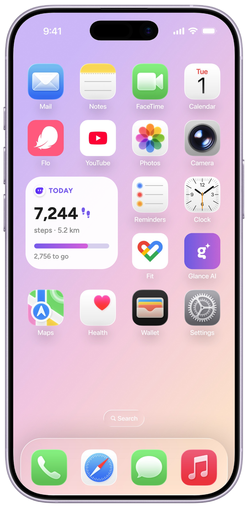<iframe src="hero.html" title="Hero loop: phone nudge to TV workout" tabindex="-1"></iframe></div>
  </section>

  <section class="col">
    <div class="persona2">
      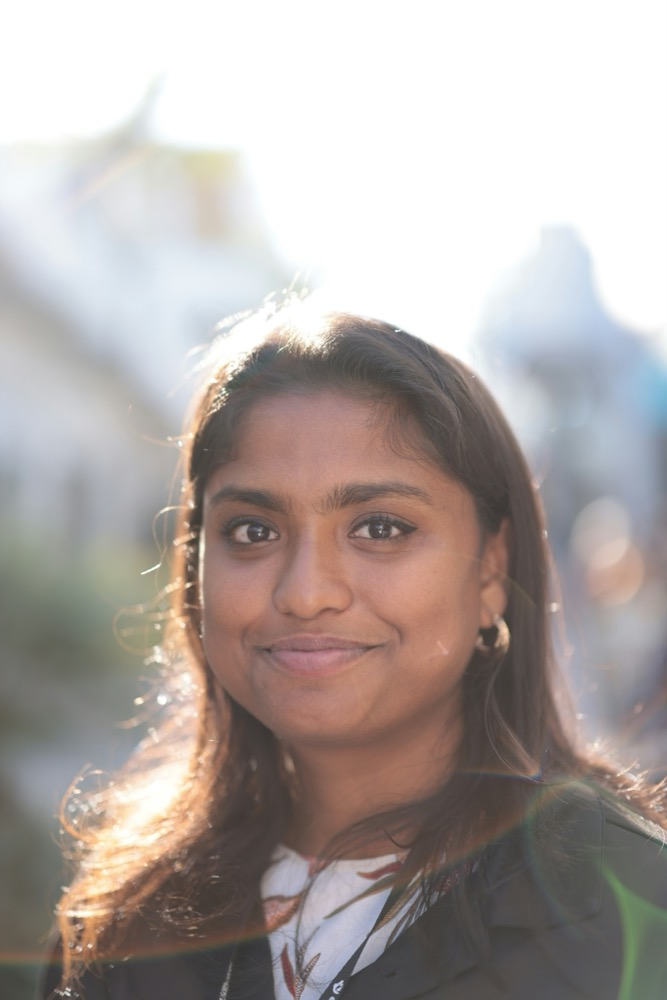
      <div class="pt">
        <div class="eyebrow">Who I designed for</div>
        <h2>Designing for my maasi, <b>Deepu</b>.</h2>
        <p>Deepali is 34 and a software engineer in Noida. Most evenings after work she dances to YouTube workouts in the living room.</p>
        <div class="tri">
          <div><small>Goal</small><b>Reach her fitness goals without hitting the gym.</b></div>
          <div><small>Struggle</small><b>Never knows how hard to go on a given day.</b></div>
          <div><small>Constraint</small><b>The TV is shared with nani, the kids and friends.</b></div>
        </div>
      </div>
    </div>
  </section>

  <section id="problem">
    <div class="loopintro"><div class="col">
      <div class="eyebrow">The guilt loop</div>
      <h2>One bad workout costs her <b>the next one too</b>.</h2>
      <p>Some days she picks HIIT, can't finish, and feels she failed. Other days she overdoes it and wakes up sore. Either way, she skips the next day.</p>
    </div>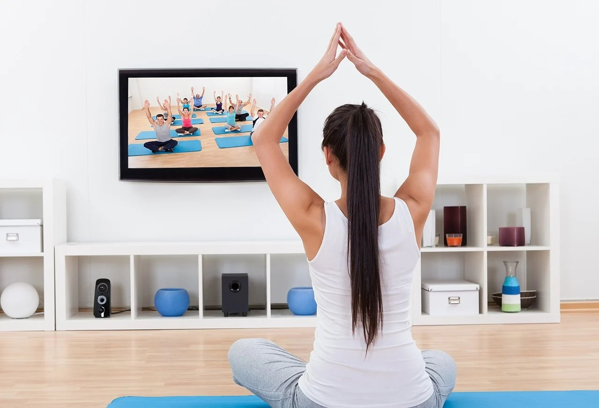</div>
    <figure><div class="kumu"><iframe src="https://embed.kumu.io/73abc3857c10dfab854de63f785db5d2" title="Causal loop map in Kumu"></iframe></div><figcaption class="cap">Live Kumu map. Hover a node to focus it. Blue arrows strengthen the loop; red ones weaken it. Purple marks where an agent can step in.</figcaption></figure>
  </section>

  <section class="col">
    <div class="eyebrow">Where I started</div>
    <h2>I set out to recommend workouts. <b>The living room changed the problem.</b></h2>
    <p>My first idea was simple: pick the right workout for the day, and she'd stop skipping. Looking closely at her evenings showed that what happened after the workout, and who else was in the room, mattered more.</p>
  </section>

  <section class="col">
    <div class="eyebrow">What I found</div><div class="foundintro"><div class="col"><h2>The data she needs is already on her phone. She just <b>doesn't see it at workout time</b>.</h2></div><div class="aicons"><span class="aicon tvi"><svg viewBox="0 0 24 24" width="30" height="30" fill="none" stroke="#fff" stroke-width="2" stroke-linecap="round" stroke-linejoin="round"><rect x="3" y="5" width="18" height="12" rx="2"/><path d="M8 21h8M12 17v4"/></svg></span></div></div>
    <div class="insights">
      <div><b>Her steps and cycle are already tracked.</b><p>Her steps (iPhone) and cycle (Flo) both sync to Apple Health. She rarely opens either.</p></div>
      <div><b>Stopping early feels like failing.</b><p>Stopping at 15 of 20 minutes feels like failing, and that guilt turns into a skipped day.</p></div>
      <div><b>The TV is shared.</b><p>Anything shown on the TV, someone else sees.</p></div>
    </div>
    <div class="hmw"><span>How might we</span><p>help Deepu maasi pick an evening workout that fits the day she's had, so stopping early on a shared TV still feels like progress?</p></div>
  </section>

  <section id="solution" class="col">
    <div class="eyebrow">The hard part</div><div class="hardintro"><div class="col"><h2>The TV is shared, so <b>the agent can't speak on it</b>.</h2></div></div>
    <div class="qa tried">
      <div><small>Tried</small><b>"Who's watching?" profiles</b><p>Nani and the kids would have to pick a profile every time they turned on the TV, just to protect one person's workout.</p></div>
      <div><small>Tried</small><b>A card on the TV home screen</b><p>Even neutral wording failed. Anyone who saw it could say "Deepu, it's your dance time," and being watched makes her self-conscious enough to skip.</p></div>
      <div class="dec"><small>Decided</small><b>Talk only on her phone.</b><p>The agent does all its talking on her phone. The TV shows nothing until she starts the workout herself.</p></div>
    </div>
  </section>

  <section>
    <div class="col">
      <div class="eyebrow">Two screens, two jobs</div>
      <h2>Her phone <b>decides</b>. The TV <b>plays</b>.</h2>
      <p>It isn't a new app she has to remember to open. It lives inside Glance AI on both screens.</p>
    </div>
    <div class="lives">
      <div class="lv"><div class="lvimg ph">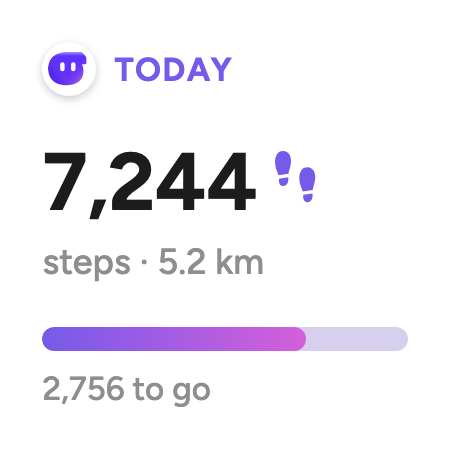</div><small>On her iPhone · Glance AI app</small><b>Where she decides.</b><p>Private, so it can use her steps and cycle. <b>One notification</b> a day, sent right after she gets home, when her phone joins home Wi-Fi. Never on the way: if she walked home and already hit her steps, there's nothing to nudge. A <b>widget</b> counts her steps through the day.</p></div>
      <div class="lv"><div class="lvimg tv">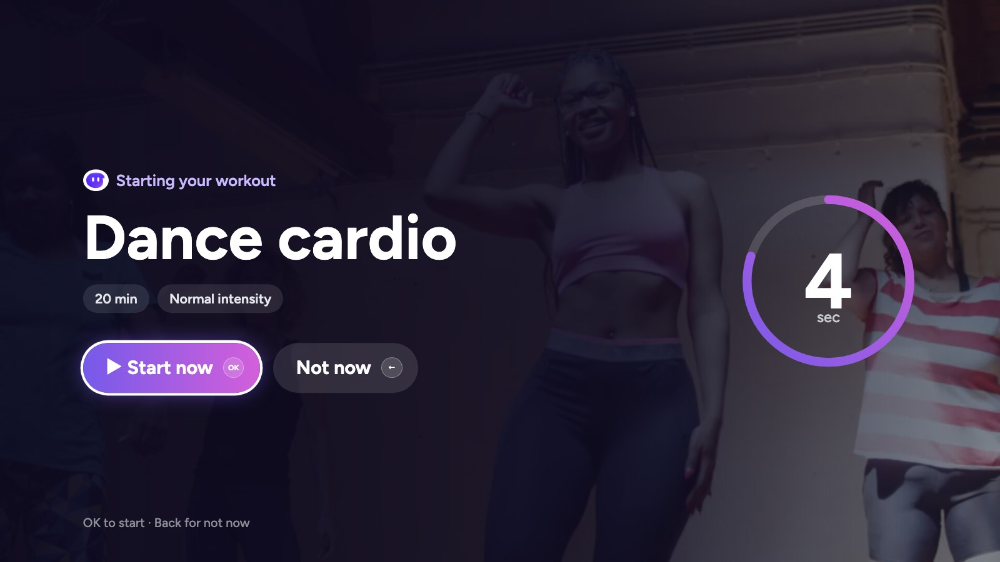</div><small>On her TV · Glance AI TV app</small><b>Where she works out.</b><p>Receives only a <b>workout title and length</b>. It's controlled with OK, Back and left/right.</p></div>
    </div>
  </section>

  <section>
    <div class="col">
      <div class="eyebrow">On the phone</div>
      <h2>However deep she goes, every path ends in <b>one of two places</b>.</h2>
      <p>Answer in one tap, see why, or open the app and change it. Ready on TV, or a quiet evening.</p>
    </div>
    <figure></figure>
  </section>

  <section id="screens">
    <div class="col">
      <div class="eyebrow">Final screens</div>
      <h2>From getting home <b>to pressing play</b>.</h2>
    </div>
    <div class="shots4 shots6"><figure class="shot"><div class="pv"><iframe data-src="full.html?ploop=1" title="The widget" tabindex="-1" loading="lazy"></iframe></div><figcaption><small class="st">During the day</small><b>The widget</b><p class="k">Quietly counts her <b>steps done</b>, not steps left.</p></figcaption></figure><figure class="shot"><div class="pv"><iframe data-src="full.html?ploop=2" title="The nudge" tabindex="-1" loading="lazy"></iframe></div><figcaption><small class="st">Just home</small><b>The nudge</b><p class="k"><b>Yes and no are one tap each</b>, so she answers instead of ignoring it.</p></figcaption></figure><figure class="shot"><div class="pv"><iframe data-src="full.html?ploop=3" title="The why" tabindex="-1" loading="lazy"></iframe></div><figcaption><small class="st">If she asks why</small><b>The why</b><p class="k">Energy in words, <b>never cycle data</b>. The lock screen isn't private.</p></figcaption></figure><figure class="shot"><div class="pv"><iframe data-src="full.html?ploop=4" title="The app" tabindex="-1" loading="lazy"></iframe></div><figcaption><small class="st">If she wants to change it</small><b>The app</b><p class="k"><b>The only place her cycle appears.</b> Chips swap type and length.</p></figcaption></figure><figure class="shot"><div class="pv">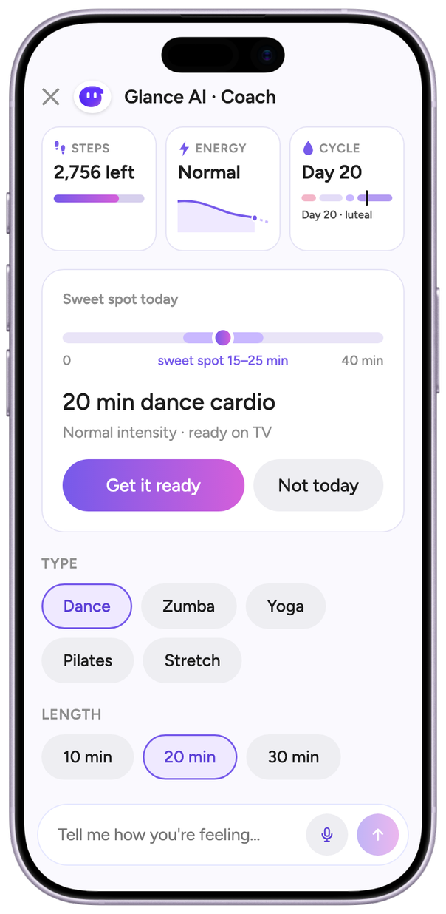<iframe data-src="full.html?ploop=5" title="The chat" tabindex="-1" loading="lazy"></iframe></div><figcaption><small class="st">If chips aren't enough</small><b>The chat</b><p class="k"><b>She says how she feels</b>, and the agent reshapes the plan.</p></figcaption></figure><figure class="shot"><div class="pv">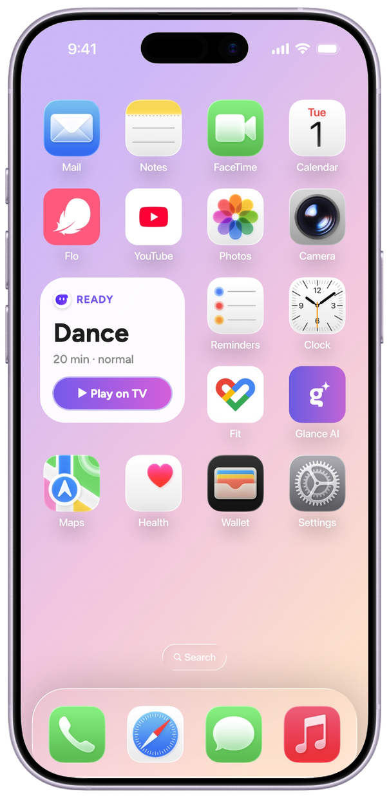<iframe data-src="full.html?ploop=6" title="Ready" tabindex="-1" loading="lazy"></iframe></div><figcaption><small class="st">At home</small><b>Ready</b><p class="k"><b>▶ Play on TV</b> is where every workout starts.</p></figcaption></figure></div>
    <figure class="roomshot"><div class="tvloop"><iframe data-src="full.html?tvloop=1" title="TV: 3-2-1 countdown, then the workout plays" tabindex="-1" loading="lazy"></iframe></div></figure>
    <div class="shots2"><figure class="shot tvs"><figcaption><small class="st">On the TV</small><b>Starting</b><p class="k"><b>Readable from the sofa.</b> OK skips the countdown.</p></figcaption></figure><figure class="shot tvs">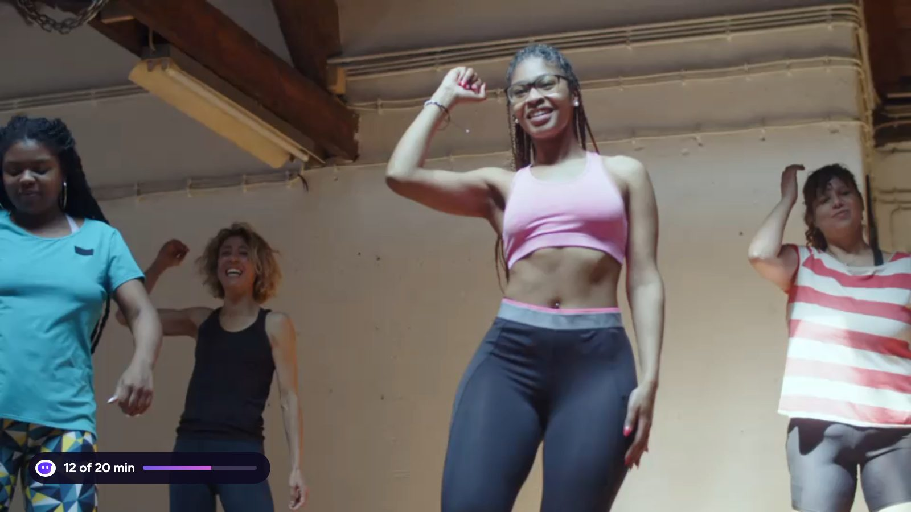<figcaption><small class="st">Mid-workout</small><b>Playing</b><p class="k"><b>Just the video.</b> OK pauses.</p></figcaption></figure><figure class="shot tvs">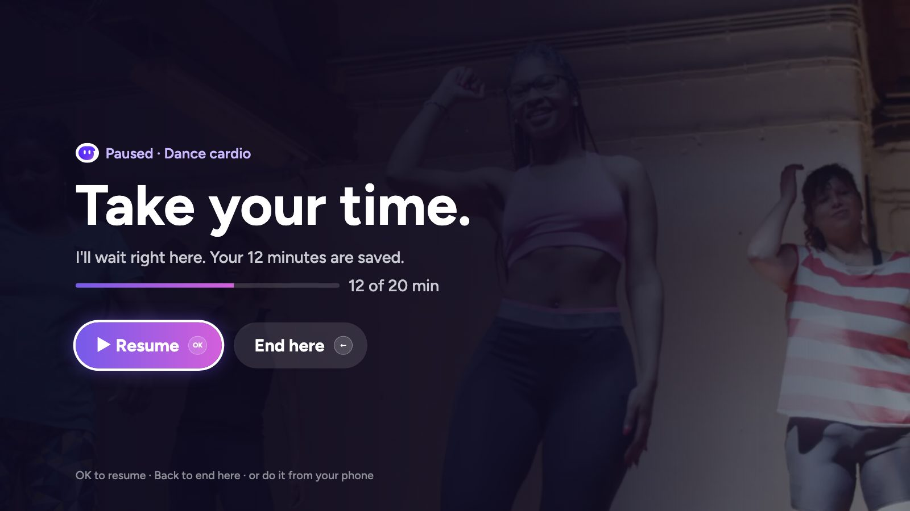<figcaption><small class="st">A break</small><b>Paused</b><p class="k"><b>Her minutes are saved.</b> Back ends it, and it still counts.</p></figcaption></figure><figure class="shot tvs">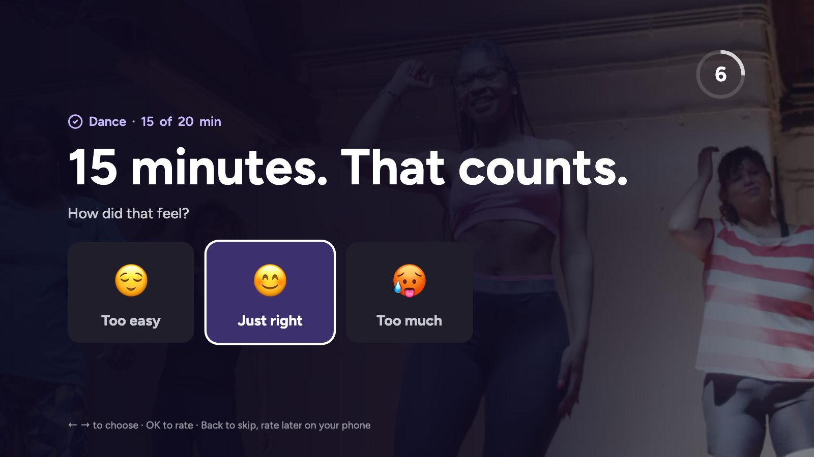<figcaption><small class="st">The end</small><b>Done</b><p class="k"><b>"15 minutes. That counts."</b> Her rating sets tomorrow's plan.</p></figcaption></figure></div>
  </section>

  <section>
    <div class="col">
      <div class="eyebrow">On the remote</div>
      <h2>Three buttons <b>on the remote</b>.</h2>
    </div>
    <div class="remote2">
      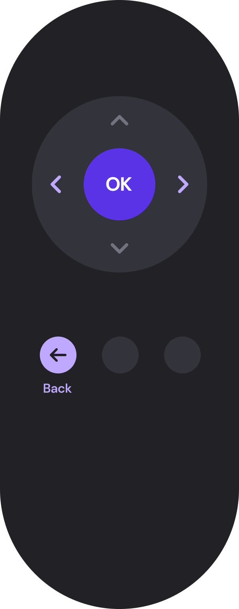
      <div>
        <div class="rgrid">
          <div><span class="k">OK</span><b>Start, pause, resume.</b><p>The only button that puts anything in motion.</p></div>
          <div><span class="k">← Back</span><b>Stop or skip.</b><p>One press.</p></div>
          <div><span class="k">‹ ›</span><b>Browse.</b><p>Choose a rating after the workout, or switch to another video.</p></div>
          <div class="off"><span class="k off">˄ ˅</span><b>Up and down stay with volume.</b><p>That's how everyone already uses them.</p></div>
        </div>
        <p class="assume">I assumed no voice, pointer or number pad, so every on-screen button shows its remote key.</p>
      </div>
    </div>
  </section>

  <section>
    <div class="col">
      <div class="eyebrow">What leaves her phone</div>
      <h2>The TV receives <b>a title and a length</b>.</h2>
      <p>Steps, cycle and goals stay on her phone. What she actually did on the TV goes back to her phone and shapes tomorrow's plan.</p>
    </div>
    <figure></figure>
  </section>

  <section class="col">
    <div class="eyebrow">The brief's four questions</div>
    <div class="qa">
      <div><small>Helpful or noise?</small><b>One nudge a day, and <em>none</em> on days she's already walked 10,000 steps.</b></div>
      <div><small>Act or ask?</small><b>It prepares the workout on its own. <em>Only she</em> can start it on the TV.</b></div>
      <div><small>When it's wrong?</small><b>Her rating after each workout <em>resizes the next one</em>.</b></div>
      <div><small>Shared TV?</small><b>It doesn't need to know who's watching, because it <em>only plays what she started</em>.</b></div>
    </div>
  </section>

  <section class="col">
    <div class="eyebrow">Edge cases</div>
    <h2>When the evening <b>goes wrong</b>.</h2>
    <div class="edge4">
      <div class="wide"><div class="ewid">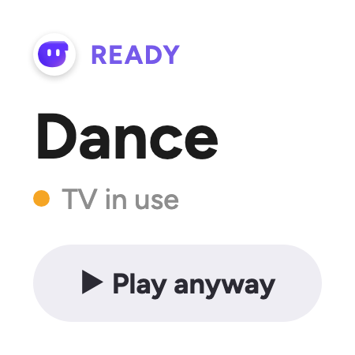</div><div class="etx"><small>TV in use</small><b>The agent never interrupts.</b><p>Her widget says <b>TV in use</b>. It's her TV, so she can play anyway, or wait until it shows <b>TV is free</b>. When the workout ends, <b>the TV goes back to whatever was playing before</b>, so nobody loses their show.</p></div></div>
      <div><small>She misses or swipes the nudge</small><b>The plan waits on the widget.</b><p>No second ping. The plan stays on her widget until her usual workout time passes, and missed nudges shift to a better time.</p></div><div><small>Paused and forgotten</small><b>The session ends quietly.</b><p>If she pauses and walks away, the TV closes the session after about 30 minutes, and the minutes she did still count.</p></div>
      <div><small>The workout suggestions keep missing</small><b>The agent asks once.</b><p>If she keeps changing or skipping the suggestions, the agent asks her what to change the next time she opens the app.</p></div>
    </div>
  </section>

  <section id="learns" class="col">
    <div class="eyebrow">How the agent learns</div>
    <h2>Every evening teaches it <b>something about tomorrow</b>.</h2>
    <p>No goals to set, no forms. It reads what she does, and each signal moves one thing: the length, the intensity, or whether it nudges at all.</p>
    <div class="lgrid"><div class="lg"><span class="lgt">How it felt</span><ul class="ll"><li><span class="le">😊</span><span class="lt">Rated <em>just right</em></span><span class="pl on ">Same plan</span></li><li><span class="le">😌</span><span class="lt">Rated <em>too easy</em></span><span class="pl on ">+5 min</span></li><li><span class="le">🥵</span><span class="lt">Rated <em>too much</em></span><span class="pl on ">Gentler, shorter</span></li></ul></div><div class="lg"><span class="lgt">What she did</span><ul class="ll"><li><span class="le">⏸️</span><span class="lt">Stopped at <em>15 of 20</em></span><span class="pl on ok">✓ Still counts</span></li><li><span class="le">🚶‍♀️</span><span class="lt">Walked <em>10,000+</em> steps</span><span class="pl on ">🔕 No nudge</span></li><li><span class="le">📺</span><span class="lt">Paused, <em>never came back</em></span><span class="pl on ok">✓ Minutes saved</span></li></ul></div><div class="lg"><span class="lgt">What she told it</span><ul class="ll"><li><span class="le">🗣️</span><span class="lt"><em>"My legs are tired"</em></span><span class="pl on ">Pilates, 15 min</span></li><li><span class="le">🌙</span><span class="lt">Low-energy <em>cycle phase</em></span><span class="pl on ">🪫 Low energy</span></li><li><span class="le">🔁</span><span class="lt">Keeps <em>changing or skipping</em></span><span class="pl on ">Asks what to change</span></li></ul></div></div>
    <p class="assume"><b>"Sweet spot"</b> is the agent's word for a sensible range for today, based on her steps, energy and recent ratings. It's a framing she can trust at a glance, not a precise formula.</p>
  </section>

  <section class="col">
    <div class="eyebrow">Success signals</div>
    <h2>Success is <b>fewer skipped days</b>, not more minutes.</h2>
    <p>I haven't tested this with her yet. The real test is a week of her evenings, and these are the four things I'd watch for.</p>
    <div class="qa">
      <div><small>The day after</small><b>A short or “too much” session is followed by <em>another one</em>, not a skipped day.</b><p>The guilt loop, broken.</p></div>
      <div><small>When she stops early</small><b>She presses Back and <em>rates it</em>, instead of leaving it paused.</b><p>Stopping reads as finishing, not failing.</p></div>
      <div><small>Her ratings</small><b>Mostly <em>“Just right”</em> by the end of the week.</b><p>The plans are learning her days.</p></div>
      <div><small>The nudge</small><b>She answers it, and <em>never turns it off</em>.</b><p>A coach, not noise.</p></div>
    </div>
  </section>

  <section id="prototype">
    <div class="col">
      <div class="eyebrow">Prototype</div>
      <h2>Live <b>her evening yourself</b>.</h2>
      <p>The cards beside the phone guide you. On the TV, your keyboard is the remote: Enter is OK, Backspace is Back.</p>
    </div>
    <div class="frame"><iframe src="full.html" title="Full interactive prototype" loading="lazy"></iframe></div>
    <div class="btns" style="margin-top:24px;justify-content:center"><a class="btn p" href="full.html" target="_blank">Open prototype</a><a class="btn" href="https://www.figma.com/design/TUhueRcRsdYhfho1S9oQYn/InMobi-Task">Figma file</a><a class="btn" href="https://kumu.io/d3zyre/glance">Kumu map</a></div>
  </section>

  <section id="reflections" class="col" style="min-height:0">
    <div class="eyebrow">Reflections</div>
    <h2>What I learned in 48 hours, and <b>what's still open</b>.</h2>
    <div class="refl">
      <div><span class="rn">01</span><b>The shared TV shaped the design more than her data did.</b><p>I started out working on workout recommendations. Most of my decisions ended up being about who else was in the living room.</p></div>
      <div><span class="rn">02</span><b>Most of the agent design was deciding when to stay silent.</b><p>It sends one nudge a day, shows nothing on the TV, and doesn't follow up after she taps Not today.</p></div>
      <div><span class="rn">03</span><b>Counting a short workout mattered more than picking the right one.</b><p>The guilt starts after the workout, when 15 minutes feels like failing. That's why the Done screen says "15 minutes. That counts."</p></div>
    </div>
    <span class="lgt" style="margin-top:56px">Still open</span>
    <div class="open4">
      <div><b>Consent for her Health and Flo data</b><p>The agent needs a clear first-run moment asking to read her steps and cycle. I haven't designed it yet.</p></div>
      <div><b>How it queues a YouTube video on her TV</b><p>It depends on what the TV app allows, including ads mid-workout. I assumed it can.</p></div>
      <div><b>Whether the guilt loop actually breaks</b><p>I'd need to watch a week of real evenings with her to find out.</p></div>
      <div><b>The 10,000-step rule</b><p>I picked it as a starting point. It hasn't been tested with her.</p></div>
    </div>
  </section>
  <section class="thx" id="end" style="min-height:0"><h2>Thanks for reading. It was fun to work on.</h2><div class="thxr"><a class="btn p" href="/">See more of my work →</a><a class="btn" href="#">↑ Back to top</a></div></section>
</main>
<script>addEventListener("message",e=>{if(e.data==="hero-ready"){const p=document.querySelector(".heropost");if(p)p.style.visibility="hidden"}})</script>

<script>(function(){const fs=[...document.querySelectorAll('iframe[data-src]')];const io=new IntersectionObserver(es=>es.forEach(e=>{const f=e.target;if(e.isIntersecting){if(!f.src||f.src==='about:blank'||f.getAttribute('src')==='about:blank')f.src=f.dataset.src}else if(f.getAttribute('src')&&f.getAttribute('src')!=='about:blank')f.src='about:blank'}),{threshold:.6});fs.forEach(f=>io.observe(f))})()</script>
<script>(function(){const nav=document.getElementById('jump'),hero=document.querySelector('.hero'),links=[...nav.querySelectorAll('a')],secs=links.map(a=>document.querySelector(a.getAttribute('href')));
function upd(){const y=scrollY;nav.classList.toggle('on',y>hero.offsetHeight*.6);let c=-1;secs.forEach((s,i)=>{if(s&&s.getBoundingClientRect().top<innerHeight*.4)c=i});links.forEach((a,i)=>a.classList.toggle('cur',i===c))}
addEventListener('scroll',upd,{passive:true});upd()})()</script>
